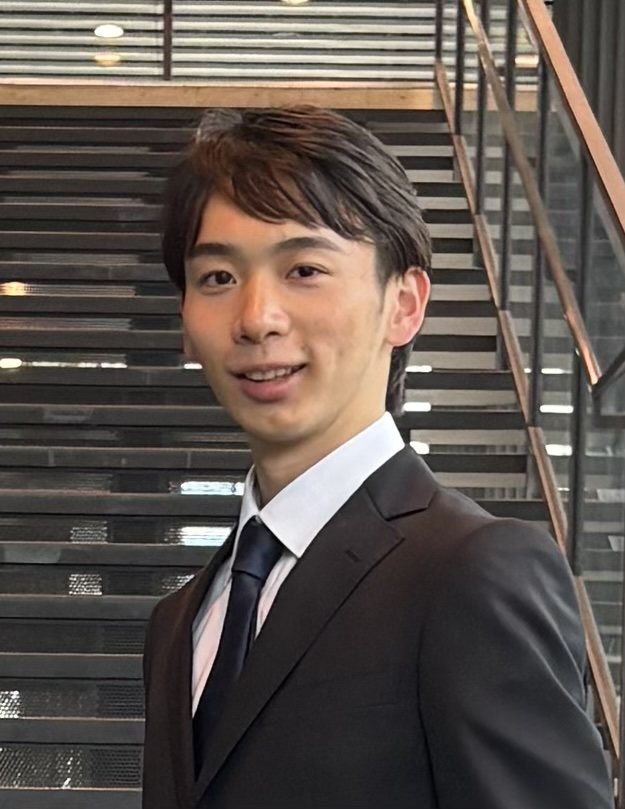
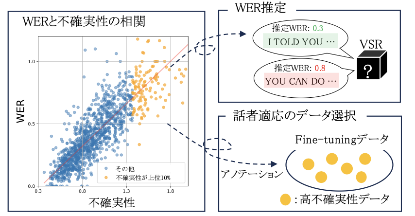

早稲田大学 / 森島研究室
早稲田大学で 深層学習を用いた研究を行なっています。特に動画を扱った研究に取り組んでおり, Visual Speech Recognition (VSR) を中心に研究しています。 VSRは、深層学習を用いて発話時の口の動きから話されている内容を認識する技術であり、読唇術の自動化とも言えます。 VSRは、音声を使用せずに発話内容を認識できるため、さまざま応用が期待されていますが, 口の動きの曖昧性や口周りの形状・動かし方の個人差の影響により、音声認識と比較して認識精度が低いことが課題となっています。 VSRの精度向上を果たし、実用化を促進するために、データ品質の影響や不確実性推定・話者適応の有効性を評価する研究を行っています。

Submitted to Interspeech 2026
Submitted to EUSIPCO 2026

情報処理学会第88回全国大会, 2026.3
学生奨励賞受賞
Email: yuasaiko100@gmail.com
GitHub: https://github.com/yuasaiko